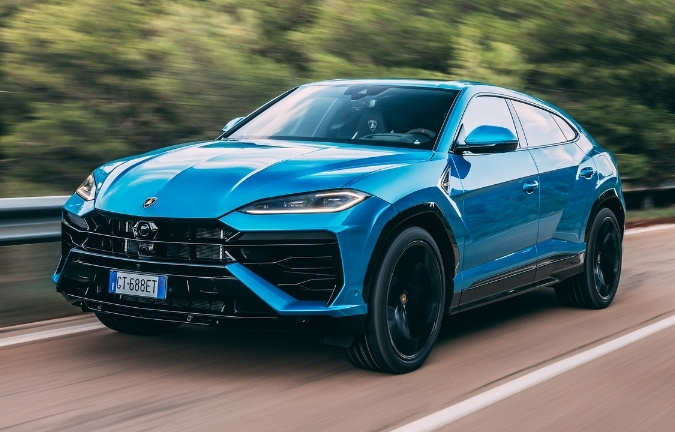
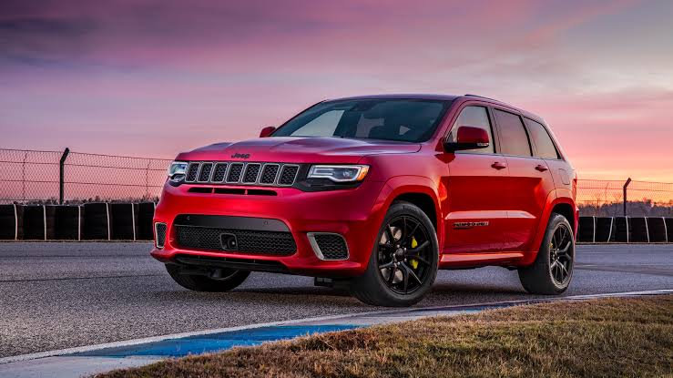
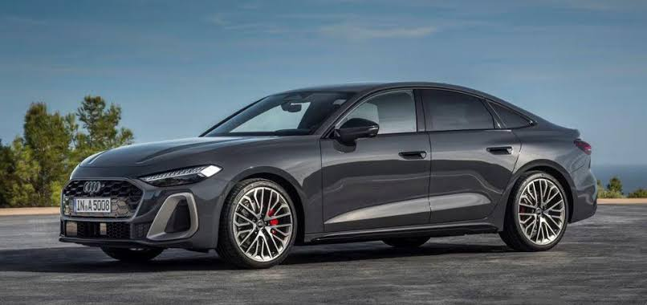
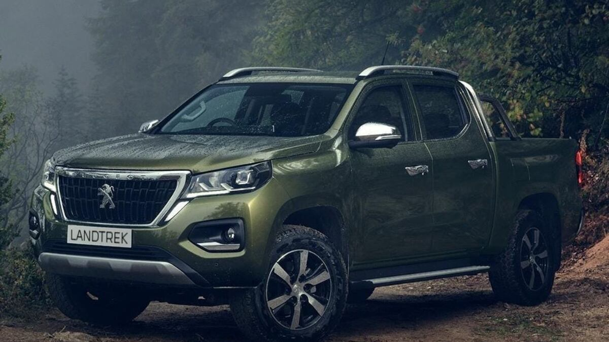
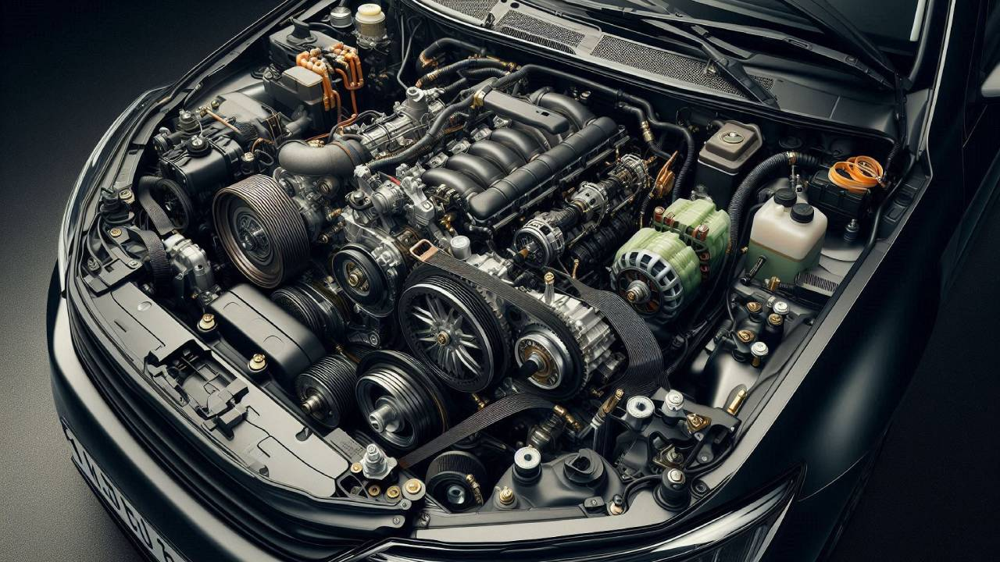
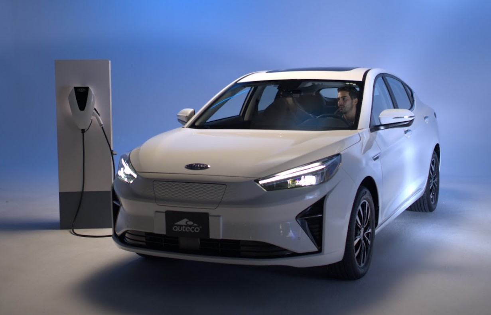
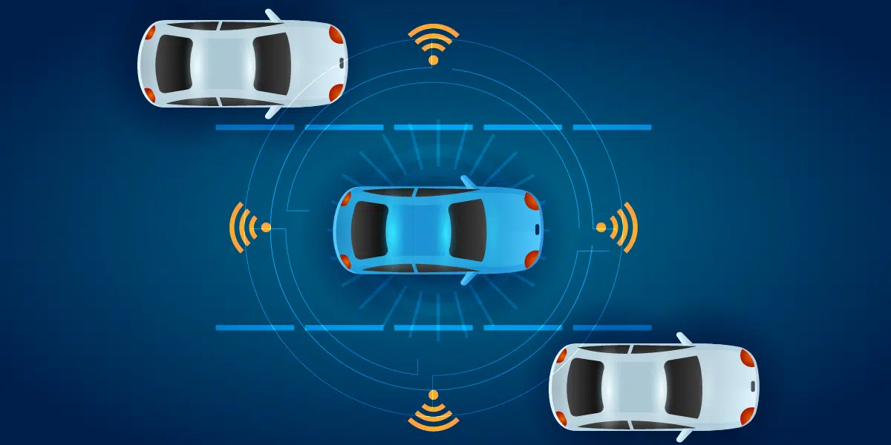

EL MUNDO DEL AUTOMÓVIL
Historia, tecnología y evolución sobre cuatro ruedas.

Historia, tecnología y evolución sobre cuatro ruedas.
Cada tipo de vehículo está diseñado para diferentes necesidades, estilos de conducción y usos.

Diseñados para ofrecer un alto rendimiento, velocidad y una experiencia de conducción dinámica.

Vehículos espaciosos y versátiles, pensados para combinar comodidad, capacidad y diferentes tipos de terreno.

Vehículos orientados al uso cotidiano, con énfasis en comodidad, espacio y eficiencia.

Vehículos con una zona de carga abierta, utilizados tanto para trabajo como para actividades recreativas.

Un automóvil está compuesto por diferentes sistemas que trabajan juntos para generar movimiento, control y seguridad.
Genera la potencia necesaria para mover el vehículo.
Lleva la potencia del motor hacia las ruedas.
Ayuda a mantener la estabilidad y absorbe las irregularidades del camino.
Permite reducir la velocidad y detener el vehículo.
Desde los primeros vehículos impulsados por motores hasta los automóviles eléctricos y conectados de la actualidad.
Karl Benz presenta el Benz Patent-Motorwagen, considerado uno de los primeros automóviles prácticos con motor de combustión interna.
El Ford Model T impulsa la producción en serie y contribuye a hacer el automóvil más accesible para la población.
Los automóviles incorporan importantes mejoras en diseño, comodidad, rendimiento y seguridad.
La electrónica adquiere un papel cada vez mayor en los sistemas de seguridad, control y entretenimiento.
Los vehículos eléctricos, los sistemas de asistencia y la conectividad forman parte de la transformación actual del automóvil.
Los avances tecnológicos están transformando la forma en que los automóviles funcionan, se conducen y se relacionan con su entorno.

Utilizan motores eléctricos y baterías para generar movimiento, reduciendo la dependencia de los combustibles tradicionales.

Sensores y sistemas electrónicos ayudan al conductor a detectar obstáculos, mantener el vehículo en su carril y mejorar la seguridad.
Los vehículos modernos pueden conectarse con dispositivos, redes y otros sistemas para ofrecer nuevas funciones y servicios.